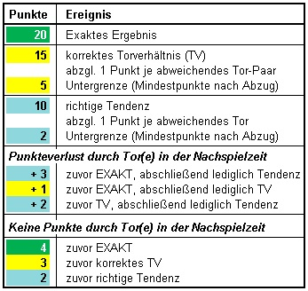

|
Allgemein Möglichst viele, sinnige Siegerränge (Platzierungen)BL-Kick-off - Spieltagsieg- meiste Spieltagsiege - höchster Spieltagsieg - Best-Start, Best-Endurance und Best-Finish jeweils höchste Punktesumme in fest definierten Spieltag-Etappen Optional: - Gewinner per Zufallsziehung Glücksrad bspw. an Länderspielpausen BL-Ultimate - Spieltagsieg- meiste exakten Tipps BL-MiniDiff - meiste Spieltagsiege- Most-Under-11 am häufigsten maximal 10 Differenzpunkte Boni B1 & B2 - B1 geringste Spieltag-Differenz kassiert zusätzlich B2, sofern dieser nicht auslöst - B2 PERFECT TIPS, sprich Spieltag-Differenz = Null Differenzpunkte kassiert gleichzeitig B1 CL-Kick-off - Spieltagsieg- Best-Start, Best-Endurance und Best-Finish höchste Punktesumme in fest definierten Spieltag-Etappen Optional: - weitere Auszeichnungen in der finalen KO-Phase - Gewinner per Zufallsziehung (Glücksrad) |
|
Allgemein Bei Punktgleichheit...in der Gesamtwertung wird NICHT aufgeteilt, sondern es werden die Summen an Tagessiegen zur Ermittlung herangezogen; sollten diese ebenfalls identisch sein, werden zusätzlich die persönlichen Höchstpunkte eines einzelnen Spieltages über die gesamte Saison-Hälfte ermittelt und miteinander verglichen; sollte es damit immer noch Unentschieden sein, entscheidet das Zufallslos werden die Auszeichnungen sehr wohl aufgeteilt Einzelheiten zum Gewinnplan werden bekannt gegeben, sobald die Anzahl der Teilnehmenden offiziell ist! Teilnahmebedingungen: Der Rechtsweg ist ausgeschlossen und über den Wettbewerb wird keine Korrespondenz geführt. BL-Kick-off & CL-Kick-off Typische/ Gewöhnliche Spielregeln und AbläufeBL-Ultimate Speziell angefertigter Algorithmus (Punktesystem) zur BewertungBerücksichtigung finden unter anderem... 1. Torabstände Punkteabzug für abweichende Tore 2. Ergebnisse zur 90. Spielminute Teil-/ Trostpunkte, wenn Tore in der Nachspielzeit den Tipp verändern/ komplett "versauen" in dieser Kategorie gibt es mehr Zusatzpunkte, je höher (ärgerlicher) der Verlust ist  BL-MiniDiff minimal difference = kleinstmöglicher UnterschiedZiel ist es, MÖGLICHST WENIGE PUNKTE zu sammeln. Bemessen an den Ereignissen in der Bundesliga finden dabei pro Spieltag folgende Zahlen Berücksichtigung: - Heimtore - Gästetore - Tore insgesamt - Spieltagpunkte |